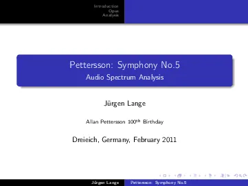

Allan Pettersson
Swedish Composer
Audio Spectra Collection
- (pdf) Audio Spectra Symphonies 2-6 (Part I)

- (pdf) Audio Spectra Symphonies 7-11 (Part II)
- (pdf) Audio Spectra Symphonies 12-16 (Part III)
- (pdf) Audio Spectra Symphony No. 1
- (pdf) Audio Spectra Violin Concerto No. 2
- (pdf) Audio Spectra Viola Concerto
Audio Spectrum Analysis 5th Symphony
 Audio Spectrum Analysis,
2011
Audio Spectrum Analysis,
2011
